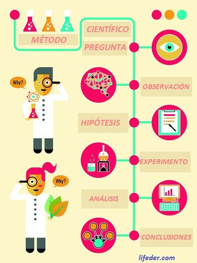
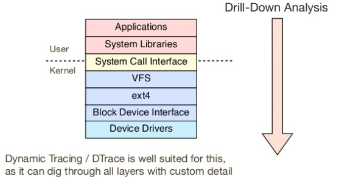

Manejo de Errores
“Ways in which things go right are special cases of the ways in which things go wrong. -- John Allspaw”
Pasos previos
Entender el problema
Reproducir el problema
Entender el histórico del problema
Estrategias
Performance Analysis
http://www.brendangregg.com/methodology.html
Anti Metodologias
”Echarle” la culpa a otro
- Encontrar un componente del sistema o ambiente del que no sea responsable
- Teorizar que hay un problema en ese componente
- Redirigir el problema
- Cuando se prueba que no ... vuelva al paso 1.
Lámpara de calle
- Elija herramientas familiares o encontradas aleatoriamente en internet
- Córralas
- Busque problemas obvios
Borracho
- Cambie cosas al azar hasta que algo funcione
Cambio aleatorio
- Elija una variable
- Mida
- Cambie la variable en una dirección
- Mida
- Cambie la variable en la dirección contraria
- Mida
- Si algo mejoró mantenga el cambio, si no devuélvalo
- Vuelva al paso 1
Benchmarking pasivo
- Elija una herramienta
- Corrala con diferentes opciones
- Haga un power point con los resultados
- Presente el power point
Semáforo
- Abra el dashboard
- ¿Todo en verde? Asuma que todo esta bien
- ¿Algo en rojo? ahí debe estar el problema
Metodologias
USE (Usage Saturation Error)
- Liste los recursos(sistemas, componentes, relaciones)
- Para cada uno revise (USE)
RED (Rate Errors Duration)
Ad hoc checklist
Definición del problema
- ¿Qué le hace pensar que hay algo mal?
- ¿Se ha comportado alguna vez bien el sistema?
- ¿Qué ha cambiado recientemente?(Software? Hardware? Carga?)
- ¿El problema afecta a otras personas o aplicaciones (o solo a ud)?
- ¿Cúal es el ambiente?¿Qué software y hardware se usa? ¿Versiones? ¿Configuración?
RTFM
Read The Fine Manual
Método Científico
OODA
- Observe
- Orient
- Decide
- Act
Drill-Down
Eliminación (Búsqueda Binaria)

Herramientas
- Liste las herramientas (y/o adicione algunas)
- Para cada herramienta liste las métricas útiles
- Para cada métrica liste su interpretación
- Corra las herramientas elegidas e interprételas
5 ¿Por qué?
CPU profile with flame graph